A structured, beginner-friendly learning website with detailed notes, real-life stories, solved problems, labelled graphs and model answers organised module-wise.
Business Economics studies how people, firms and governments make choices when resources are limited. It connects everyday decisions—what a household buys, how a shop sets prices, how a factory plans output and how countries trade—with economic ideas and tools.
How to use this website
Read the lesson in your own words.
Study the graph and identify both axes.
Work through the numerical example without looking at the answer.
Practise writing the model answer in the required word range.
Attempt the matching module practice under timed conditions.
01 / CORE NOTES
Complete module notes
Five connected modules, explained from beginner level.
Module 1 — Demand, Supply and Market Equilibrium
1. Meaning of demand
In economics, demand is not simply a wish. It is the quantity of a good or service that consumers are willing and able to purchase at different prices during a particular period, other things remaining constant. A student may want an expensive laptop, but if the student cannot afford it, that wish is not effective market demand. Demand therefore combines desire, purchasing power and willingness to pay.
Story: Imagine a juice shop near a college. At ₹80 per glass, many students may buy one glass. If the price falls to ₹40, some students may buy two glasses or students who previously avoided the shop may become customers. The quantity demanded generally rises when price falls, assuming other influences do not change.
2. Law of demand and demand curve
The law of demand states that, other things remaining constant, quantity demanded varies inversely with price: when price rises, quantity demanded tends to fall; when price falls, quantity demanded tends to rise. The demand curve normally slopes downward from left to right. This relationship is explained by the substitution effect (buyers switch to alternatives) and income effect (a lower price increases the purchasing power of a given income).
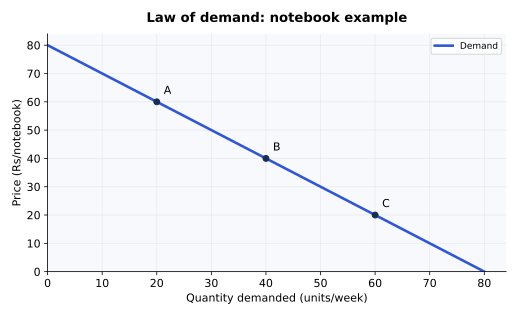
Read the vertical axis as price per unit and the horizontal axis as quantity per period. A movement along D is caused by a change in the product's own price.
3. Movement versus shift in demand
A change in the product's own price causes an extension or contraction along the same demand curve. A change in income, tastes, population, expectations or the price of related goods shifts the entire curve. For example, a rise in income may shift demand for normal goods to the right. A successful health campaign may shift demand for sugary drinks to the left.
Extension / contraction
Own price changes; same curve; quantity demanded changes.
Increase / decrease in demand
Non-price determinant changes; whole curve shifts right or left.
4. Factors affecting demand
Price of the product: usually creates movement along the curve.
Consumer income: demand for normal goods usually rises with income; demand for some inferior goods may fall.
Tastes and preferences: trends, advertising, fashion and health awareness influence buying.
Prices of related goods: substitutes compete; complements are consumed together.
Population and buyer composition: more potential customers can raise market demand.
Expectations: expected future price increases may bring purchases forward.
5. Supply and law of supply
Supply is the quantity producers are willing and able to offer for sale at different prices during a period. The law of supply states that, other things remaining constant, a higher price generally encourages producers to supply more because the activity may become more profitable. A supply curve normally slopes upward.
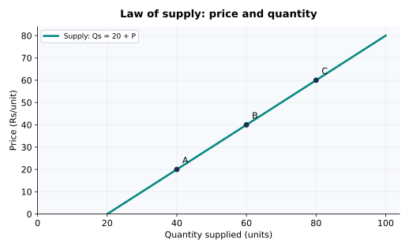
Supply can be affected by input costs, technology, taxes and subsidies, number of sellers, weather, expectations and production capacity. Better technology may reduce unit cost and shift supply right. A rise in electricity or raw-material cost may shift supply left.
6. Market equilibrium
Market equilibrium occurs where quantity demanded equals quantity supplied. The intersection of demand and supply determines the equilibrium price and equilibrium quantity. If the market price is above equilibrium, a surplus may occur because sellers offer more than buyers wish to purchase; pressure to reduce price can follow. If price is below equilibrium, a shortage may occur and buyers compete for limited supply.
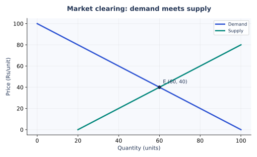
When demand increases: the demand curve shifts right. With supply unchanged, equilibrium price and quantity generally rise. When supply decreases: the supply curve shifts left. With demand unchanged, equilibrium price generally rises and equilibrium quantity falls. Always state the assumption that the other curve is unchanged.
7. Elasticity of demand
Price elasticity of demand measures how responsive quantity demanded is to a percentage change in price. It is calculated as percentage change in quantity demanded divided by percentage change in price. The sign is often negative because price and quantity demanded move in opposite directions; many introductory answers discuss the absolute value.
Perfectly elastic: extremely responsive; a tiny price rise can cause demand to fall to zero in the ideal model.
Perfectly inelastic: quantity demanded does not change when price changes.
Relatively elastic: percentage change in quantity is greater than percentage change in price (absolute elasticity greater than 1).
Relatively inelastic: percentage change in quantity is smaller than percentage change in price (absolute elasticity below 1).
Unitary elastic: percentage changes are equal (absolute elasticity equals 1).
Necessities with few close substitutes, such as essential medicines, may have relatively inelastic demand. Optional products with many alternatives may have relatively elastic demand. Time, availability of substitutes, proportion of income spent and whether the product is a necessity influence elasticity.
8. Consumer and producer surplus
Consumer surplus is the difference between what a buyer is willing to pay and what the buyer actually pays. Producer surplus is the difference between the price received and the minimum price at which the producer was willing to sell. If a buyer values a book at ₹500 but buys it for ₹350, the buyer receives ₹150 of consumer surplus. If the seller would have accepted ₹250 but receives ₹350, producer surplus is ₹100. These ideas help explain gains from voluntary market exchange.
9. Demand forecasting
Demand forecasting is the systematic estimation of future demand. Businesses use it to plan inventory, staffing, capacity, cash and marketing. Methods include customer surveys and market research, sales-force estimates, trend/projection analysis using past sales, expert opinion and test marketing. A forecast is an estimate, not a guarantee; assumptions and uncertainty should be stated.
Business story — the umbrella seller: A retailer notices that umbrella sales rise during the monsoon. Last year's sales are useful, but the retailer also checks the weather forecast, local construction activity, competitor prices and current stock. This combines past data with present market information rather than relying on one number.
MODULE 1 / DEEP STUDY
10. Learn the language of markets
Economics begins with scarcity: our wants exceed our available resources. A student with ₹100 cannot spend the same ₹100 on both a movie ticket and a meal. Opportunity cost is the value of the next-best alternative sacrificed. Microeconomics studies individual households, firms and markets; macroeconomics studies the economy as a whole. Business economics uses these ideas to solve practical decisions, such as choosing a selling price or planning the number of units to produce.
Term
Meaning
Example
Ceteris paribus
Other relevant factors remain unchanged
Compare the same juice at two prices
Demand schedule
A table of quantities buyers want at different prices
60 notebooks at ₹20; 40 at ₹40
Normal good
Demand increases as income increases
Better-quality shoes, often
Inferior good
Demand decreases as income increases
A cheaper substitute a household stops buying
Substitute
An alternative product
Tea and coffee
Complement
A product consumed together with another
Printer and ink
Market demand
Sum of individual demand at each price
All students buying canteen meals
11. From a schedule to a curve: equilibrium numerically
At a college stall, assume demand Qd = 100 − P and supply Qs = 20 + P, with price P in rupees and quantity Q in units per day. Notice that the demand equation subtracts price: a higher price discourages buying. The supply equation adds price: a higher price encourages production.
Price (₹)
Qd
Qs
Market situation
20
80
40
Shortage of 40
30
70
50
Shortage of 20
40
60
60
Equilibrium
50
50
70
Surplus of 20
60
40
80
Surplus of 40
Step 1: At equilibrium Qd = Qs. Step 2: 100 − P = 20 + P → 80 = 2P. Step 3: P = ₹40. Substitute into either equation: Q = 60. Interpretation: At ₹40, the planned purchases match planned sales.
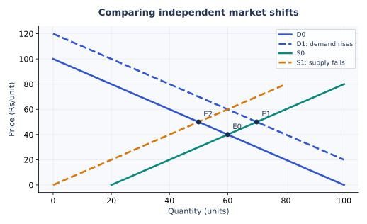
Price is vertical and quantity horizontal. E0 is the baseline; E1 shows only demand increasing; E2 shows only supply decreasing. Compare one shift at a time.
12. Elasticity is a percentage response, not just a slope
Price elasticity of demand (PED) measures sensitivity to the product's own price. Income elasticity (YED) measures sensitivity to income. Cross elasticity (XED) measures sensitivity to another product's price. A positive XED commonly indicates substitutes; a negative XED commonly indicates complements. For example, if coffee demand rises 6% when tea prices rise 3%, XED = +2. If income rises 10% and restaurant demand rises 15%, YED = +1.5, suggesting a normal good in this example.
For a small price rise, total revenue tends to rise if demand is inelastic and fall if it is elastic, assuming all else is constant. Remember that revenue is not profit. A discount may bring more customers but also reduce contribution per unit.
Magnitude of PED
Name
Meaning
0
Perfectly inelastic
Quantity unchanged
0–1 (exclusive)
Relatively inelastic
Quantity changes proportionately less
1
Unit elastic
Equal proportional change
Above 1
Relatively elastic
Quantity changes proportionately more
Infinite (ideal)
Perfectly elastic
A horizontal demand curve
13. Gains from trade within a market
Willingness to pay is the maximum value a buyer assigns to a unit. Reservation price is the minimum a seller accepts for a unit. In a linear market with D: P = 100 − Q and S: P = 20 + Q, equilibrium is Q = 40 and P = ₹60. The demand intercept is ₹100 and the supply intercept ₹20.
Consumer surplus = ½ × 40 × (100 − 60) = ₹800. Producer surplus = ½ × 40 × (60 − 20) = ₹800. Total surplus = ₹1,600.
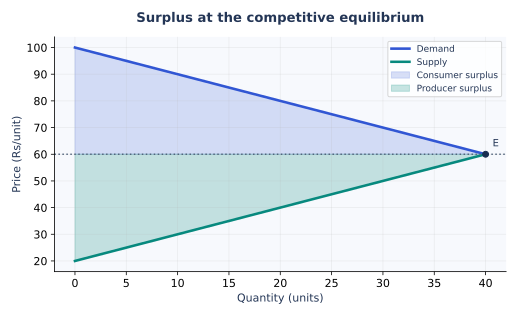
The blue area is consumer surplus above the market price; the green area is producer surplus below the market price. Both end at equilibrium quantity.
14. Forecast demand like a manager
A stationery seller predicts demand for the next month. Start with the decision and horizon, collect previous sales and market research, select a method, test it against actual demand and revise the result. A moving average is simple: sales of 80, 100 and 120 give a next-period forecast of 100 units. If actual sales become 110, forecast error (actual minus forecast) is +10 units. Overestimation risks unsold stock; underestimation risks stockouts. A seasonal business should compare like periods and allow for festivals or college terms.
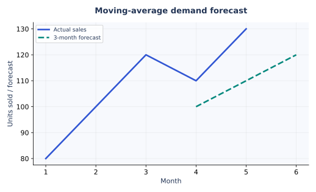
Actual sales (solid) and the forecast calculated from the preceding three observations (dashed). The graph continues one month past the available actual data.
Think like an economist: A discount increases sales at a canteen. Is it a demand shift? No: if only own price changed, it is movement along the curve. If new students join the campus at the same price, demand may shift.
Module 2 — Production, Cost, Revenue and Break-even
1. Production and production function
Production is the process of converting inputs—land, labour, capital, entrepreneurship and technology—into goods or services. A production function expresses the technical relationship between quantities of inputs and the maximum output obtainable with a given technology. In simple form, Q = f(L, K), where Q is output, L is labour and K is capital. It helps managers consider whether additional workers, machines or training can increase output.
Bakery example: Flour, ovens, electricity, bakers and recipes are inputs. Bread is output. Adding one baker may raise production, but if the oven is already fully occupied, the extra baker may wait. The production function reminds us that inputs work together.
2. Short run and long run
The short run is a period in which at least one factor of production is fixed, such as factory size. The long run is a planning period in which all factors can be varied. Short run and long run are not a fixed number of months; they depend on how quickly a firm can change its resources.
3. Law of variable proportions
When more units of a variable input are combined with fixed inputs, total output may initially rise at an increasing rate, then rise at a diminishing rate, and eventually may fall. This is the law of variable proportions. It is commonly described in three stages:
Stage I — average product rises overall until AP reaches its maximum (MP = AP). Initially marginal product may rise; diminishing marginal product can begin before Stage I ends.
Stage I — average product rises overall until AP reaches its maximum (MP = AP). Initially marginal product may rise; diminishing marginal product can begin before Stage I ends.
Stage I — average product rises overall until AP reaches its maximum (MP = AP). Initially marginal product may rise; diminishing marginal product can begin before Stage I ends.
4. Costs of production
Cost is the expenditure or economic sacrifice involved in producing output. Fixed costs do not change with output in the short run (for example, monthly rent). Variable costs change with output (for example, ingredients or packaging). Total cost = total fixed cost + total variable cost. Average cost is cost per unit; marginal cost is the additional cost of producing one more unit.
Measure
Meaning
Example
TFC
Total fixed cost
₹10,000 rent
TVC
Total variable cost
₹40 per unit × units
TC
TFC + TVC
₹10,000 + TVC
AC
TC ÷ output
Cost per unit
MC
Change in TC ÷ change in output
Extra cost for one more unit
5. Economies of scale
Economies of scale are reductions in long-run average cost as the scale of production increases. A larger business may buy inputs in bulk, use specialised machinery, spread advertising and administrative costs over more units, and access cheaper finance. Diseconomies of scale may occur when a business becomes so large that communication, coordination and control become difficult.
6. Revenue
Total revenue (TR) is price multiplied by quantity sold. Average revenue (AR) is revenue per unit sold; in a simple single-price case it equals price. Marginal revenue (MR) is the additional revenue earned from selling one more unit. A firm compares revenue and cost to decide output, pricing and whether expansion is worthwhile.
7. Break-even analysis
Break-even point is the level of sales at which total revenue equals total cost. At this output, the business makes neither profit nor loss. Contribution per unit = selling price per unit − variable cost per unit. Break-even output in units = fixed cost ÷ contribution per unit.
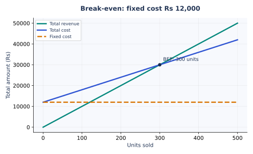
In a break-even graph, the horizontal axis represents units sold or produced and the vertical axis represents money (₹). The total revenue line starts at zero when no units are sold. The total cost line starts above zero because fixed costs exist even at zero output. Their intersection is the break-even point. Before it, the firm has a loss; after it, the firm earns profit, assuming the relationships remain linear.
Worked example: A small tiffin business has fixed costs of ₹12,000 per month. Each meal sells for ₹100 and variable cost is ₹60. Contribution = ₹100 − ₹60 = ₹40. Break-even output = ₹12,000 ÷ ₹40 = 300 meals. At 300 meals, revenue is ₹30,000 and total cost is ₹12,000 + ₹18,000 = ₹30,000.
8. Business decision example
Suppose a business is considering a discount. It should estimate how the lower price may affect sales volume, contribution per unit, total revenue and capacity. A discount can increase total profit only if the additional volume and cost structure make it worthwhile. Production, cost and revenue are therefore linked rather than isolated topics.
MODULE 2 / DEEP STUDY
9. Inputs, output and productivity
Suppose a small bakery operates one oven. Land or premises provide space, labour consists of bakers, capital includes equipment and entrepreneurship coordinates risk and organisation. The short run fixes some inputs, not necessarily for any specified number of months. In the long run even the size of the bakery can change. Productivity measures output relative to input. A production function describes feasible physical output at given technology, before assigning money values.
TP is total product; AP = TP/L is output per worker; MP = ΔTP/ΔL is the additional output from extra labour. Here L is number of workers.
Workers
Total meals (TP)
Average product
Marginal product
0
0
—
—
1
10
10
10
2
24
12
14
3
39
13
15
4
48
12
9
5
52
10.4
4
6
50
8.33
-2
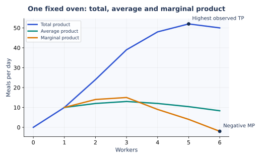
Total output peaks in the observed table at five workers. The sixth worker adds −2 meals. Average and marginal product tell different stories; MP can fall before total product falls.
In a smooth production model, Stage I ends when AP is greatest and MP equals AP. Stage II ends when MP = 0 and TP is greatest; in Stage III, MP is negative. The table is discrete, so the exact theoretical boundaries may fall between observations. Adding a worker whose contribution is positive may still be unprofitable if the extra output is worth less than the wage.
10. Accounting cost, economic cost and sunk cost
Explicit costs are direct payments such as rent and wages. Implicit costs are the opportunity cost of resources owned by the entrepreneur. A proprietor using their own shop could have earned rent by letting it out; that forgone rent is an implicit cost. Economic profit subtracts both explicit and implicit costs, while accounting profit ordinarily subtracts explicit accounting costs. A sunk cost is already incurred and cannot be recovered; it should not determine future decisions unless it changes future benefits or costs.
Cost formula
What it tells the manager
TC = TFC + TVC
Total expenditure or cost of output
AFC = TFC/Q
Fixed cost per unit
AVC = TVC/Q
Variable cost per unit
AC = TC/Q = AFC + AVC
Cost per unit
MC = ΔTC/ΔQ
Cost of extra output
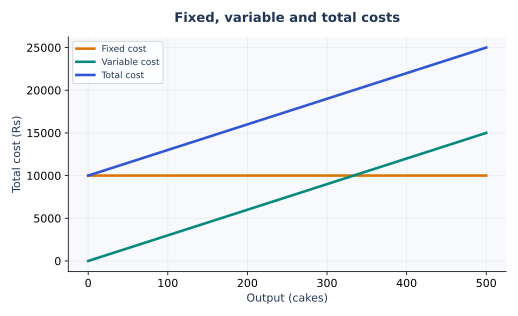
At zero output total cost equals fixed cost. In this linear example, variable cost is ₹30 per cake, and the gap between total cost and variable cost is the ₹10,000 fixed cost.
11. Scale versus working harder in one factory
If a business increases labour with its equipment fixed, it is studying variable proportions. If it can change the entire plant and all its inputs, it is studying long-run scale. Bulk buying, division of labour and specialised machines can reduce long-run average cost. Excessive hierarchy and coordination difficulties can make it rise. Internal economies arise within the firm; external economies arise from wider industry conditions, such as a trained workforce or common infrastructure.
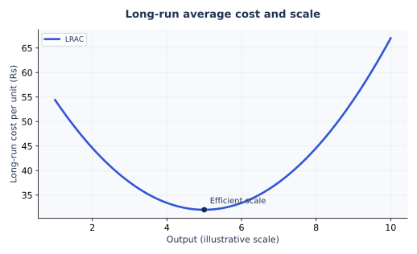
Output is horizontal, cost per unit vertical. The falling part represents economies of scale, the minimum represents an efficient scale in this example, and the rising part represents diseconomies.
12. Revenue, contribution and target profit
Revenue is money from sales; contribution is revenue less variable costs. At ₹100 selling price and ₹60 variable cost, the contribution of one tiffin is ₹40. To recover fixed cost of ₹12,000, the firm needs 300 meals. To earn a target profit of ₹4,000, it needs (12,000 + 4,000)/40 = 400 meals. Break-even revenue is 300 × ₹100 = ₹30,000. Margin of safety is actual sales minus break-even sales, so at 450 meals it is 150 meals or 33.3% of actual sales.
Decision: At ₹90 selling price with variable cost unchanged at ₹60, contribution becomes ₹30 and BEP becomes 400 meals. The discount must create enough extra sales to offset lower contribution. Recalculate if the seller has limited kitchen capacity.
In a simple output decision, compare marginal revenue with marginal cost. Produce another unit if it adds more revenue than cost; stop expanding if the reverse is true, subject to market demand and capacity. In a smooth interior optimum, MR = MC is a necessary condition, with marginal cost crossing marginal revenue appropriately for a maximum.
Module 3 — Market Structures
1. Meaning of market structure
Market structure describes the organisation of a market and the nature of competition among firms. Important dimensions include the number of sellers, product differentiation, barriers to entry, information and the ability of firms to influence price. It affects pricing, advertising, innovation and consumer choice.
2. Perfect competition
Perfect competition is an ideal market model with many buyers and sellers, homogeneous products, relatively free entry and exit, and good market information. No single firm is large enough to control the market price; each firm is a price taker. Agricultural commodity markets are sometimes used as an approximation, although real markets rarely satisfy every assumption.
3. Monopoly
A monopoly is a market with one dominant seller and no close substitute for the product, protected by significant barriers to entry. Barriers may arise from legal rights, control of essential resources, large infrastructure costs or network effects. The monopolist has market power, but it is still constrained by consumer demand, regulation and possible substitutes.
4. Monopolistic competition
Monopolistic competition contains many firms selling products that are similar but differentiated through brand, quality, design, location or service. Firms compete through price and non-price methods such as packaging, advertising and customer experience. Restaurants, salons and clothing labels are common illustrations.
5. Oligopoly
An oligopoly is a market dominated by a small number of large firms. Each firm's decisions can affect rivals, so firms are interdependent. They may compete through price, innovation, advertising and service. In collusive oligopoly, firms coordinate or agree on prices/output (which may be illegal under competition law). In non-collusive oligopoly, firms make decisions independently while anticipating rivals' reactions.
Feature
Perfect competition
Monopoly
Monopolistic competition
Oligopoly
Number of sellers
Very many
One
Many
Few dominant firms
Product
Homogeneous
No close substitute
Differentiated
Standardised or differentiated
Entry barriers
Low in model
Very high
Relatively low
Often significant
Price influence
Price taker
Considerable market power
Some influence
Strategic interdependence
Illustration
Commodity market approximation
Local regulated utility (context-dependent)
Restaurants
Airlines / telecom (market-dependent)
Phone market story: A small number of large network operators watch one another's data plans. If one cuts prices, rivals may respond. That strategic reaction is the key idea of oligopoly. It is not simply that the firms are large; it is that each must consider the likely response of the others.
MODULE 3 / DEEP STUDY
6. Visualise the competitive landscape
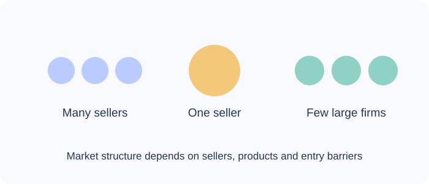
The four market models differ in the number of sellers, product differentiation and pricing discretion. Real markets may lie between models.
Think of a market as all buyers and sellers of a relevant product in a defined area. A single tea stall in one street is not automatically a monopoly if customers can easily buy tea in another street. A firm is a price taker when it cannot influence the prevailing price by changing its own small output. A firm has market power when it can influence its selling price, but the buyers' response limits that power.
7. Price and non-price competition
A perfectly competitive producer typically focuses on reducing costs because the product is homogeneous and the market sets the price. A monopolistically competitive bakery differentiates through taste, quality and location; this can create customer loyalty. A monopoly may be protected by high infrastructure costs, legal exclusivity or a lack of close substitutes. A monopolist still faces a demand curve, and selling more may require lowering the price. In oligopoly, a price change can trigger rival responses.
Feature
Perfect competition
Monopoly
Monopolistic competition
Oligopoly
Firm demand curve
Horizontal at market price
Market demand
Downward sloping
Depends on rival reactions
Product
Identical
No close substitute
Differentiated
Identical or differentiated
Entry
Relatively easy
High barriers
Relatively easy
Often difficult
Competition focus
Costs
Demand and regulation
Brand / quality
Strategy and innovation
8. A strategy story: three snack companies
Imagine companies A, B and C. If A discounts a snack from ₹20 to ₹15, B can match the price, improve its product, or leave its price unchanged. C may focus on a new flavour. A cannot predict sales using only its own price; competitors' responses matter. This is non-collusive oligopoly. Collusion occurs when firms coordinate competitive decisions, such as agreeing to maintain high prices or limit output. Such coordination may harm consumers and violate competition rules. Similar prices alone are not proof of collusion: firms can independently respond to shared market costs.
Exam checkpoint: Do not confuse monopoly with monopolistic competition. One seller and high entry barriers define the monopoly model; many differentiated sellers and comparatively easy entry define monopolistic competition. Both may influence their own selling price, but for different reasons.
9. Business decisions in each structure
A commodity producer looks for technical efficiency. A differentiated café invests in customer experience and brand recognition. A concentrated industry watches competitors before changing prices or capacity. A regulated monopoly must consider its demand, production costs and applicable rules. The same price or advertising policy does not suit every market structure. Entry, product substitutability, information and scale shape the competitive environment.
Module 4 — National Income, Inflation, Exchange Rates and Business Cycles
1. Macroeconomics and national income
Macroeconomics studies the economy as a whole: total production, employment, general price levels, growth and international transactions. National income is a measure of the income earned by the factors of production of a country over a period, subject to the specific national-accounting concept being used. GDP, GNI and national income are related but not identical terms; in an exam answer, define the measure clearly.
2. Methods of estimating national income
Product / value-added method: add value added by producing units across sectors, avoiding double counting of intermediate goods.
Income method: add factor incomes such as wages, rent, interest and profit, with appropriate accounting adjustments.
Expenditure method: add final expenditure: consumption + investment + government spending + (exports − imports), commonly written Y = C + I + G + (X − M) for GDP expenditure accounting.
Illustrative expenditure calculation: Household consumption ₹500 crore, investment ₹120 crore, government spending ₹150 crore, exports ₹80 crore and imports ₹50 crore. GDP by expenditure = 500 + 120 + 150 + (80 − 50) = ₹800 crore. This is an illustrative classroom calculation; national accounts require careful classification and adjustments.
3. Inflation
Inflation is a sustained increase in the general price level over time, which reduces the purchasing power of money. It is not simply one item becoming expensive. Demand-pull inflation occurs when aggregate demand grows faster than the economy's capacity to supply. Cost-push inflation occurs when production costs such as energy, wages or imported inputs rise and firms pass some of the increase into prices. Other classifications include creeping, walking, running and hyperinflation based on pace.
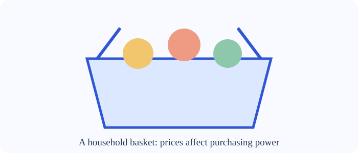
Inflation affects households by reducing real purchasing power, especially when incomes do not rise as quickly as prices. Businesses may face higher input costs, uncertainty, wage pressure and difficulty setting prices. Borrowers and lenders may be affected differently depending on whether interest rates and incomes adjust.
4. Exchange rates
An exchange rate is the price of one currency in terms of another. For example, if one US dollar exchanges for ₹84, the quoted rate is ₹84 per dollar (illustrative only, not a current market quote). A depreciation of the domestic currency means more domestic currency is needed to buy a unit of foreign currency; imports may become more expensive while exports may become more price-competitive, depending on pass-through and other conditions.
Fixed exchange rate
Flexible exchange rate
Authority maintains a target or peg.
Market demand and supply largely determine the rate.
May provide greater short-term predictability.
Can adjust to external shocks.
Requires reserves and policy commitment.
Can fluctuate and create uncertainty for traders.
May limit independent monetary policy.
Monetary policy may have more flexibility, subject to constraints.
5. Business cycle
A business cycle is the fluctuation of overall economic activity around its long-term growth path. A simplified cycle has four phases: expansion, peak, contraction/recession and trough/recovery. During expansion, output, employment and spending generally rise. At a peak, activity reaches a high point and capacity constraints or inflationary pressure may appear. During contraction, output and investment may fall and unemployment may rise. At the trough, activity reaches a low point before recovery begins.
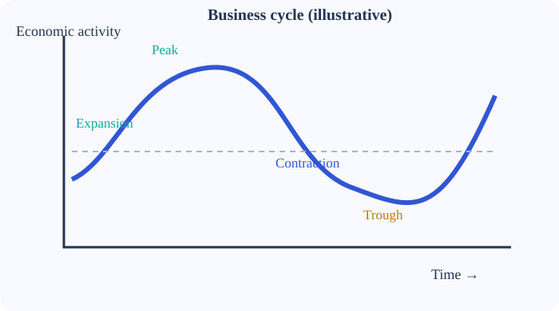
Causes may include changes in investment, consumer confidence, interest rates, credit conditions, technology, government policy, commodity prices and external shocks. Businesses can plan by maintaining cash buffers, using flexible staffing, monitoring demand indicators, diversifying suppliers and avoiding excessive debt during uncertain periods.
Case: A furniture manufacturer sees fewer orders during a downturn. Instead of expanding its factory immediately, it monitors bookings, reduces avoidable inventory, negotiates supplier terms and protects cash flow. When demand recovers, it can restart investment. Economic understanding supports decisions; it does not remove uncertainty.
MODULE 4 / DEEP STUDY
6. GDP, GNI and NNI with a bakery analogy
GDP is the market value of final goods and services produced within a country's economic territory over a period. Imagine all shops, farms and factories inside a country. GDP records production taking place there, not the nationality of the owners. Gross national income (GNI) adjusts GDP for net primary income from abroad, which is income received from the rest of the world minus income paid to it. Gross means before deducting consumption of fixed capital (depreciation). Net national income (NNI) is GNI minus depreciation.
Measure
Formula / interpretation
GDP
Domestic production; C + I + G + (X − M)
GNI
GDP + net primary income from abroad
NNI
GNI − consumption of fixed capital
Real GDP
Output valued in constant-price terms
Nominal GDP
Output valued at current prices
GDP is ₹800 crore, net primary income from abroad is ₹20 crore and depreciation is ₹50 crore. GNI = 800 + 20 = ₹820 crore. NNI = 820 − 50 = ₹770 crore. Under a traditional syllabus convention, NNP at factor cost also requires adjustment for net indirect taxes from the market-price measure.
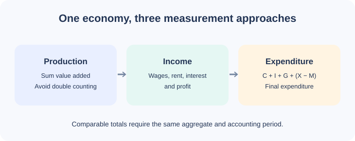
The value-added, income and expenditure approaches measure production from different angles. Match the accounting aggregate before comparing results.
7. Three methods in a bread economy
A farmer sells wheat for ₹40, a mill sells flour for ₹70, and a baker sells bread to a household for ₹100. The value added is 40 + (70 − 40) + (100 − 70) = ₹100. Adding all sales would count the intermediate wheat and flour more than once. Income method accounts for income earned in current production, such as wages, operating surplus and mixed income, with necessary adjustments. Expenditure method adds spending on final domestic output. Investment here means spending on capital formation and inventory changes, not simply purchasing shares. Imports are subtracted to avoid counting foreign production.
8. Inflation, purchasing power and real income
Consumer price indices represent a selected basket of goods and services. A price index rising from 120 to 126 implies inflation of (126 − 120)/120 × 100 = 5%. If a salary rises only 3% while the price index rises 5%, real purchasing power falls. Disinflation means a lower positive inflation rate; deflation means a falling general price level. Businesses may pass higher costs to consumers, but their ability to do so depends on competition and demand elasticity.
A fixed budget buys less when the same basket becomes more expensive, unless income rises enough to compensate.
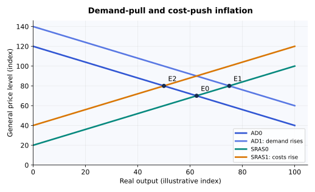
Aggregate demand (AD) shifts right from AD0 to AD1 in demand-pull inflation, moving E0 to E1. Short-run aggregate supply (SRAS) shifts left/up from SRAS0 to SRAS1 in cost-push inflation, moving E0 to E2. Compare each shift independently. Vertical axis: general price level; horizontal axis: real output.
9. Exchange-rate language without confusion
Always read the quotation. At ₹80 per USD, $100 costs ₹8,000. At ₹85 per USD, the same $100 costs ₹8,500; the rupee depreciates against the dollar in this illustrative floating-rate example. Conversely, if the quotation falls to ₹75 per dollar, the rupee appreciates. Under a fixed regime, an official downward adjustment in the domestic currency's value is called devaluation. Appreciation and depreciation normally describe market-driven rate movements. Under floating, prices respond to currency demand and supply; under fixed, an authority defends a target. Some systems are managed floats.
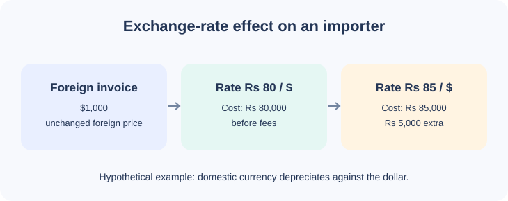
A rise in the rupee-per-dollar quote increases the rupee cost of an unchanged dollar invoice. All quoted rates are hypothetical.
10. Plan business activity through the cycle
Phase
Typical economy-wide conditions
Possible management response
Expansion
Rising demand, employment and investment
Assess capacity, hire carefully
Peak
High activity, possible bottlenecks
Guard against excess debt and stock
Contraction
Weaker sales, income and investment
Preserve cash, adjust stock and budgets
Trough / recovery
Low activity, then improving orders
Monitor recovery and prepare investment
Cycles have no guaranteed duration or amplitude. A single business may grow during a broader contraction; its results alone do not establish the economy-wide phase. External shocks, credit conditions and changing confidence can reinforce each other. Managers can build optimistic, base and pessimistic budgets rather than relying on a single demand estimate.
Module 5 — International Trade and Trade Policy
1. Meaning and importance of international trade
International trade is the exchange of goods and services across national borders. Countries trade because resources, technology, skills, climate, costs and consumer preferences differ. Trade can widen consumer choice, create export markets, encourage specialisation and provide access to inputs. It can also expose domestic industries to competition and external shocks.
2. Absolute advantage
A country has an absolute advantage in producing a good if it can produce more output with the same resources, or the same output with fewer resources, than another country. Absolute advantage compares productivity directly.
3. Comparative advantage
A country has a comparative advantage in a good when it can produce that good at a lower opportunity cost. Opportunity cost is the next-best alternative sacrificed. Trade can benefit both countries when each specialises relatively more in the good with lower opportunity cost, even if one country is more productive in both goods.
Country
Maximum rice (units)
Maximum cloth (units)
Country A
10
5
Country B
6
4
Country A has an absolute advantage in both goods because it can produce more of each. But opportunity costs differ. In A, 1 unit of cloth costs 2 units of rice (10/5). In B, 1 cloth costs 1.5 rice (6/4). Therefore B has comparative advantage in cloth. For rice, A's opportunity cost is 0.5 cloth per rice, while B's is 4/6 = 0.667 cloth; A has comparative advantage in rice. A mutually beneficial trade price can lie between the two opportunity costs, subject to actual preferences and trade costs.
4. Free trade and protectionism
Free trade means cross-border trade with relatively few government-imposed barriers. It can lower prices, increase choice, improve competition and support specialisation. Protectionism refers to policies that shield domestic producers from foreign competition. Governments may use tariffs, quotas, subsidies, standards or other restrictions to pursue objectives such as infant-industry development, strategic security or employment protection. Protection can also raise consumer prices, reduce choice and invite retaliation.
5. Tariffs and customs unions
A tariff is a tax imposed on imported goods. It can raise the domestic price of an imported product, reduce import quantity, generate government revenue and protect competing domestic producers. Consumers may pay more, and downstream businesses using imported inputs may face higher costs. The actual effect depends on market structure, exchange rates, substitution and whether exporters absorb part of the tax.
A free trade area removes or reduces trade barriers among members, while each member retains its own external tariff policy toward non-members. A customs union goes further: members remove internal trade barriers and adopt a common external tariff toward non-members. This distinction is important in trade-policy questions.
International case: A domestic bicycle maker imports specialised gears. A tariff on imported gears may protect a local gear producer, but it may also increase the bicycle maker's costs. The policy therefore creates trade-offs among producers, workers, consumers and downstream firms.
MODULE 5 / DEEP STUDY
6. Imports, exports, trade balance and trade costs
Exports are goods and services sold abroad, while imports are purchases from abroad. The trade balance for goods and services is exports minus imports; a positive balance is a surplus and a negative balance a deficit under that definition. A merchandise trade balance includes goods only, so avoid confusing it with the wider current account. Trade connects domestic customers, foreign currency markets, transport, producers and customs authorities. Even if a foreign producer has lower production costs, logistics, insurance and tariffs may change the final purchasing decision.
7. Comparative advantage with two countries
Imagine one identical resource bundle in each country. A can produce at most 10 rice or 5 cloth; B can produce at most 6 rice or 4 cloth. A is more productive in both, but giving up one cloth is less costly for B.
Country
Rice capacity
Cloth capacity
Cost of 1 rice
Cost of 1 cloth
A
10
5
0.5 cloth
2 rice
B
6
4
0.667 cloth
1.5 rice
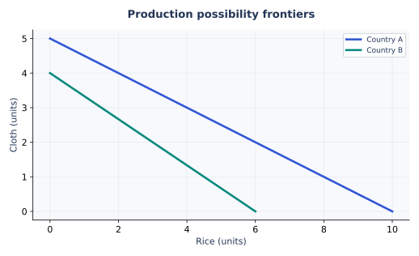
The PPF shows combinations of rice and cloth attainable with fixed resources and constant opportunity costs in this example. Its endpoints are maximum quantities.
A has comparative advantage in rice and B in cloth. At 1 cloth for 1.75 rice, both can gain relative to domestic production: A gives up 1.75 rather than 2 rice for cloth, and B obtains 1.75 rather than 1.5 rice per cloth. The terms are mutually beneficial before transaction costs. Specialisation can be partial; full specialisation is not necessary for every real-world gain from trade.
8. What happens when a domestic market opens?
In a simplified small-country model, the world price is given. If it is below the domestic no-trade price, domestic demand exceeds domestic supply at the world price; imports fill the gap. If world price is above that no-trade price, supply exceeds domestic demand; the excess can be exported. Free trade does not mean there are no transport costs or regulations. The model isolates the price effect while assuming competitive markets and costless international exchange.
9. Tariffs and trade agreements
Consider domestic demand Qd = 100 − P and supply Qs = 20 + P. Without trade the price is ₹40. At a world price of ₹20, Qd = 80 and Qs = 40, so imports are 40 units. A ₹10 per-unit tariff, fully passed through, raises the price to ₹30. Qd becomes 70 and Qs becomes 50; imports fall to 20. Tariff revenue = 10 × 20 = ₹200. Consumers face higher prices, domestic producers receive more per unit, and the government receives tariff revenue. In this standard small-country model, the restriction also creates efficiency losses.
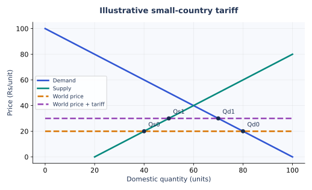
Price on the vertical axis, quantity on the horizontal. The horizontal world-price line moves up by the tariff. Compare domestic quantities at the two given prices.
Arrangement
Internal trade
External trade policy
Free trade area
Reduced internal barriers
Each member sets external policy
Customs union
Reduced internal barriers
Common external tariff
Protectionism
Restrictions on selected imports
Tariffs, quotas or other barriers
Think like a policy maker: Protecting an infant industry can create time to learn and scale, but the benefits depend on whether the industry becomes competitive. Consumers and firms buying protected inputs pay the cost of higher prices in the simple model. Evaluate the policy rather than claiming that trade or protection always helps everyone.
02 / APPLY THE FORMULAS
Numerical practice studio
Follow the steps, then test yourself.
Price elasticity of demand
Formula: PED = percentage change in quantity demanded ÷ percentage change in price.
Price rises from ₹20 to ₹25 (25% rise). Quantity falls from 100 to 80 units (20% fall). PED = −20% ÷ 25% = −0.8. Absolute value 0.8 is below 1, so demand is relatively inelastic over this example.
For percentage-change questions, check whether the question expects the simple initial-value method or midpoint method. State the method used.
Use Y = C + I + G + (X − M). Let C=₹700 crore, I=₹180 crore, G=₹220 crore, X=₹100 crore and M=₹140 crore.
Y = 700 + 180 + 220 + (100 − 140) = ₹1,060 crore.
Exports are added; imports are subtracted because imported production is not domestic output.
Opportunity cost
Country A can produce 12 units of wheat or 6 units of cloth. Producing 1 cloth sacrifices 2 wheat. Country B can produce 8 wheat or 8 cloth. Producing 1 cloth sacrifices 1 wheat. B has lower opportunity cost in cloth; A has comparative advantage in wheat.
Extra exercises
FC ₹18,000, price ₹120, variable cost ₹75. Find BEP units.
Price falls by 10%, quantity rises by 15%. Calculate PED and classify.
TR ₹90,000 and TC ₹76,500. Find profit.
C=600, I=150, G=200, X=90, M=110 (₹ crore). Estimate GDP by expenditure.
12 additional solved problems & interactive practice
All figures are classroom illustrations. Enter the numerical result only, then check the step-by-step solution. Round to two decimal places when needed.
FC ₹12,000, SP ₹100, VC ₹60, target profit ₹8,000.
Contribution = 40. Target output = (12,000+8,000)/40 = 500 meals. At 500 meals BEP is 300, margin of safety = 200 or 40% of sales.
Try it yourself
FC ₹15,000, SP ₹120, VC ₹70. Find units for target profit ₹5,000.
Show solution
(15,000+5,000)/(120−70) = 400.
SOLVED / 08
Inflation using an index
Previous index 125; current index 135. Find inflation.
Change = 135−125 = 10. Divide by old index: 10/125=.08. Multiply by 100 = 8%.
Try it yourself
CPI rises from 150 to 159. Find inflation in percent.
Show solution
(159−150)/150 × 100 = 6%.
SOLVED / 09
GDP to GNI to NNI
GDP ₹900 crore, net primary income from abroad −₹20 crore, depreciation ₹40 crore.
GNI = 900−20 = ₹880 crore. NNI = 880−40 = ₹840 crore. Negative net primary income reduces GNI.
Try it yourself
GDP ₹1,000 crore; net primary income ₹30 crore; depreciation ₹50 crore. Find NNI.
Show solution
1,000+30−50 = ₹980 crore.
SOLVED / 10
Exchange rate effect
An invoice of $2,000 is due. Rate rises from ₹80 to ₹84 per dollar.
Old cost = 2,000 × 80 = ₹160,000. New cost = 2,000 × 84 = ₹168,000. Extra = ₹8,000. Rates illustrative.
Try it yourself
An importer owes $500. Rate rises from ₹80 to ₹86. Find extra rupee cost.
Show solution
500 × (86−80) = ₹3,000.
SOLVED / 11
Tariff calculation
An imported component has customs value ₹2,500, with 12% duty.
Duty = 2,500 × .12 = ₹300. Value plus tariff = ₹2,800 before other taxes, freight or fees.
Try it yourself
Customs value ₹8,000; tariff 15%. Find duty.
Show solution
8,000 × .15 = ₹1,200.
SOLVED / 12
Opportunity cost
Country A can produce 20 wheat or 10 cloth; B can make 12 wheat or 8 cloth.
A: 1 cloth costs 2 wheat; B: 1 cloth costs 1.5 wheat. B has comparative advantage in cloth; A in wheat.
Try it yourself
Country C can make 18 rice or 6 cloth. Find opportunity cost of one cloth in rice.
Show solution
18/6 = 3 rice.
03 / SEE THE ECONOMICS
Graph laboratory
Each graph includes its axes, curves and interpretation.
Demand curve
Y-axis: price per unit. X-axis: quantity demanded per period. D slopes downward. A price change creates movement along D; income, preferences or related-good prices can shift D.
Supply curve
Y-axis: price per unit. X-axis: quantity supplied per period. S slopes upward. Lower input costs or better technology may shift supply right; higher costs may shift it left.
Market equilibrium
The intersection E is where quantity demanded equals quantity supplied. A rightward demand shift usually raises equilibrium price and quantity. A leftward supply shift usually raises price and lowers quantity, assuming the other curve is unchanged.
Break-even chart
Y-axis: revenue/cost in ₹. X-axis: output or sales units. TR begins at zero; TC begins at fixed cost. Their intersection is BEP. Left of BEP is loss; right is profit.
Business cycle
Y-axis: level of economic activity (illustrative index). X-axis: time. Expansion, peak, contraction and trough/recovery describe changing activity around a long-run trend.
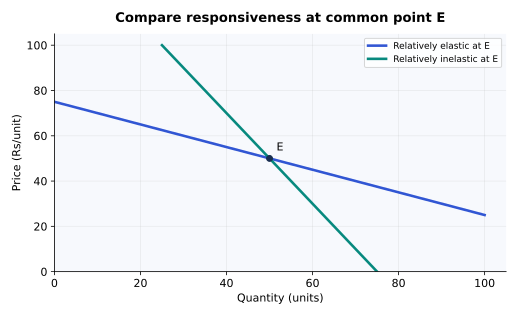
Elasticity comparison
A relatively elastic demand curve is flatter: quantity responds more to a price change. A relatively inelastic demand curve is steeper: quantity responds less, other things equal. Slope and elasticity are related but not identical in every context.
More labelled diagrams
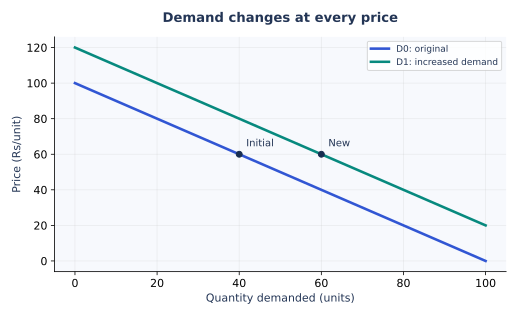
Demand shift
X: quantity, Y: price. D1 is to the right of D0. Holding price at ₹60, quantity demanded rises from 40 to 60 due to a non-price factor.
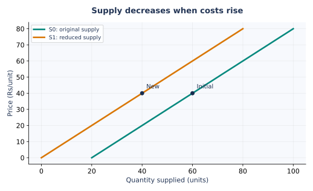
Supply shift
X: quantity, Y: price. A cost increase shifts supply left; at ₹40, firms now supply 40 rather than 60 units.
Equilibrium after shifts
X: quantity, Y: price. Compare E0 (60,40) with E1 (70,50) or E2 (50,50); the shifts are separate experiments.
Market welfare
X: quantity, Y: price. The demand and supply curves measure marginal willingness to pay and accept. The two coloured triangles show gains at equilibrium.
Law of variable proportions
X: workers, Y: product. TP, AP and MP measure different aspects of productivity. MP turns negative at six workers.
Short-run costs
X: output, Y: total cost. FC is horizontal, VC starts at zero and total cost begins at FC.
Economies of scale
X: output, Y: long-run cost per unit. From left to right, falling LRAC represents economies and rising LRAC represents diseconomies.
Demand forecasting
X: month, Y: units. Actual sales are observed while the dashed line is calculated from the preceding three months.
Comparative advantage
X: rice, Y: cloth. Different slopes represent different opportunity costs under constant-cost assumptions.
Import tariff
X: quantity, Y: price. The world price plus tariff is above the initial world price. Domestic supply increases, demand falls and imports shrink.
Inflation: aggregate demand and supply
X: real output; Y: price level. An AD increase raises price and output in the model. A short-run AS decrease raises price but reduces output, other things unchanged.
LIVE EXPERIMENTS
Change the conditions and observe the market
These models use simple linear equations and illustrative data, not forecasts of actual markets.
1 · Demand and supply laboratory
2 · Break-even laboratory
3 · World price and international trade
4 · Price elasticity and revenue
Starting at price ₹50 and quantity 50, adjust the new price along Q = 100 − P.
04 / CONNECT TO REAL LIFE
Case studies
HOUSEHOLD
Monthly grocery budget
A household notices that cooking oil prices rise. It compares brands, reduces waste and substitutes another oil. Discuss demand, substitutes, elasticity and purchasing power. If the product has few substitutes in the short run, demand may be relatively inelastic.
SMALL BUSINESS
Campus café break-even
A café pays monthly rent and sells sandwiches. Rent is fixed in the short run; bread, vegetables and packaging vary with output. Calculate contribution and BEP before deciding how many sandwiches must be sold daily.
INDUSTRY
Telecom competition
A few operators monitor each other's data plans and network investments. Explain oligopoly, interdependence, price competition, non-price competition and why collusion raises competition concerns.
INTERNATIONAL TRADE
Imported machine parts
A manufacturer imports components. A tariff may protect local component makers but raise costs for the manufacturer and prices for customers. Identify the stakeholders and discuss the trade-off between protection and efficiency.
Case study workbook
HOUSEHOLD / APPLICATION
Riya’s grocery basket
Riya earns ₹30,000 per month. Her food basket increases from ₹6,000 to ₹6,600 while income stays fixed. She substitutes cheaper brands where possible.
Question
Calculate the price rise and new share of income. Why may demand for an essential food remain inelastic?
Discuss the solution
Price rise = 600/6,000 × 100 = 10%. Food share rises from 20% to 22%. Essential purchases with few substitutes may change less proportionately than price. Purchasing power falls when income does not keep pace.
BUSINESS / APPLICATION
Campus café pricing
A café has fixed costs ₹12,000, selling price ₹100, variable cost ₹60 and expected monthly sales of 400. Its owner plans a discount to ₹90 and hopes to sell 450.
Question
Compare profit before and after the discount. Should the owner automatically discount?
Discuss the solution
Before: 400×40−12,000 = ₹4,000. After: 450×30−12,000 = ₹1,500. Despite selling more meals, profit declines. The café needs more than 533.33 sales at the discounted price to exceed the original profit.
INDUSTRY / APPLICATION
Local delivery app rivalry
Three delivery apps serve a hypothetical city. App A introduces lower delivery fees. App B adds a loyalty plan, while C improves its delivery speed.
Question
Which market structure fits? Why must A consider B and C? What if the companies agree to maintain high fees?
Discuss the solution
Few interdependent firms make oligopoly a reasonable model for the example. Rivals’ reactions can change A’s expected demand. Independent improvement is non-collusive rivalry; agreement to maintain fees is collusive and could violate competition rules.
TRADE / APPLICATION
Import-dependent manufacturer
A toy factory imports parts valued at ₹1,000 per unit. A 10% tariff is imposed, fully passed through. A competing local part maker can increase output.
Question
Compute the additional import cost. Identify a potential winner and loser.
Discuss the solution
Duty = ₹100 per component. The imported input costs ₹1,100 before other charges. Local part makers may gain demand, while the toy factory faces higher costs; consumers may pay more if the factory passes the cost on.
MACROECONOMICS / APPLICATION
Furniture orders during a downturn
A furniture firm normally sells 500 chairs monthly. Orders fall to 350 as households delay major purchases. It has six months of rent committed.
Question
Calculate the sales-volume decline. Name two business planning responses.
Discuss the solution
Decline = (500−350)/500 × 100 = 30%. Review inventory and cash-flow forecasts, postpone avoidable expansion, and maintain capacity to meet recovery. One firm’s decline alone does not prove an economy-wide recession.
DEMAND PLANNING / APPLICATION
Seasonal bookshop
A shop sells 80, 100 and 120 notebooks over three comparable months. A new college class is opening nearby.
Question
Forecast sales using the simple moving average. What additional information should the shop obtain?
Discuss the solution
Moving average = 100. Survey student requirements, check course start dates and competitor prices, and adjust for new students rather than treating historical averages as certain.
05 / MODULE-WISE QUESTION BANK
Question bank with model answers
All 39 original questions are organised by module and marks. The answer matching the original marks opens first; other lengths are additional revision variants. The diagrams are illustrative learning aids.
06 / TEST YOURSELF
Practice examinations
Choose a module to attempt its descriptive questions or take a concept quiz. Each module practice includes all its original questions, an optional countdown, and model-answer self-assessment. Marks and suggested duration depend on the module.
Module 1 — Demand, Supply & Market Equilibrium
Module 2 — Production, Cost & Revenue
Module 3 — Market Structures
Module 4 — Macroeconomics
Module 5 — International Trade
Choose a module for timed descriptive practice or a quick concept quiz for immediate objective feedback. The website does not automatically grade long written answers.
07 / WRITE TO SCORE
Exam writing guidance
2 marks
Write a direct definition in about 2–4 sentences (the paper allows up to 50 words). Include the key economic term and one clarifying phrase or example. Avoid long introductions.
Structure:
Define.
State the central feature.
Add a tiny example if useful.
5 marks
Write a short, organised explanation (the paper allows up to 150 words). Give a one-sentence introduction, explain four or five points, and use a relevant example or comparison.
Structure:
Meaning / context.
Four numbered points or a comparison table.
One-line conclusion.
10 marks
Build a complete answer with a definition, logical headings, detailed explanation, labelled graph or worked example where relevant, and a short conclusion. The uploaded paper does not state a fixed word limit for Part C, so prioritise completeness and clarity.
Structure:
Introduction and definition.
Explain each main point.
Diagram / example / calculation.
Application and conclusion.
Time management for a 2-hour, 50-mark paper: use the first few minutes to read instructions and choose Part C options. Allocate time roughly in proportion to marks, keep a buffer for review, and do not let one 10-mark answer consume the time needed for the rest.
Mark-wise answer writing example: break-even
2 marks — define
Break-even point is the output level at which total revenue equals total cost. At this point the firm makes neither profit nor loss.
5 marks — explain
Define BEP, identify fixed and variable cost, state contribution formula, calculate a small example, and end with the meaning. Use ₹12,000/(₹100−₹60)=300 units. Explain why 300 is a no-profit, no-loss volume.
10 marks — develop
Write a definition, explain each cost term, show formulas and substitution, label axes and TR/TC curves, identify BEP, interpret sales below and above BEP, state assumptions and finish with managerial relevance. See the full break-even analysis answer in Module 2.
Suggested timing (not an official marking scheme): Reading 5 minutes; Part A 20 minutes; Part B 40 minutes; Part C 45 minutes; review 10 minutes. Use the original word limits (A up to 50, B up to 150). For module practice, attempt every available question; in an actual exam, follow its choice instructions.
08 / LAST-MINUTE REVIEW
Final revision desk
Important definitions
Demand: willingness and ability to buy at different prices over a period.
Supply: willingness and ability to sell at different prices over a period.
Elasticity: responsiveness of one variable to a change in another.
Production function: technical input-output relationship.
Break-even: total revenue equals total cost.
Oligopoly: market dominated by a few interdependent firms.
Inflation: sustained rise in the general price level.
Exchange rate: price of one currency in another currency.
Tariff: tax on imports.
Comparative advantage: lower opportunity cost in producing a good.
Formula sheet
PED = % change in Qd ÷ % change in P
TC = TFC + TVC
AC = TC ÷ Q
MC = change in TC ÷ change in Q
TR = P × Q
AR = TR ÷ Q
Profit = TR − TC
Contribution/unit = SP − VC/unit
BEP units = FC ÷ contribution/unit
GDP expenditure = C + I + G + (X − M)
Opportunity cost = next-best alternative sacrificed
High-priority module revision areas
Law of demand, factors affecting demand, supply and equilibrium.
Elasticity types and examples; consumer and producer surplus.
Demand forecasting methods and sources.
Production function, law of variable proportions and stages.
Fixed/variable and short-run/long-run costs; break-even.
Four market structures; collusive and non-collusive oligopoly.
National income methods, inflation and business cycles.
Fixed/flexible exchange rates.
International trade, absolute/comparative advantage, tariffs and customs unions.
Comparison checkpoints
Movement along demand vs shift in demand.
Fixed cost vs variable cost.
Short run vs long run.
Perfect competition vs monopolistic competition.
Collusive vs non-collusive oligopoly.
Fixed vs flexible exchange rate.
Absolute vs comparative advantage.
Free trade area vs customs union.
Free trade vs protectionism.
Rapid formula and comparison cards
Topic
Formula / rule
Exam reminder
PED
%ΔQd / %ΔP
Use absolute magnitude for classification
YED
%ΔQd / %Δincome
Negative = inferior good
XED
%ΔQd / %ΔP of related good
Positive for substitutes; negative for complements
Surplus
½ base × height for linear curves
CS above price, PS below price
Forecast
Sum last n observations / n
Compare actual with forecast
AP / MP
TP/L ; ΔTP/ΔL
Average is not marginal
BEP
FC/(SP−VC)
Contribution must be positive for positive FC
Target profit
(FC + desired profit)/(SP−VC)
Round required units upward
Inflation
(New index−Old index)/Old index × 100
General price level, not one good
GNI / NNI
GDP + net primary income ; GNI − depreciation
Domestic vs national; gross vs net
Tariff
Customs value × rate (ad valorem)
Specific tariffs are per-unit charges
Trade gap
Domestic demand − supply at world price
Positive gap = imports
Compare
Main distinction
Demand vs quantity demanded
Whole schedule vs one amount at a given price
Expansion vs recession
Growing vs contracting aggregate economic activity
Revenue vs profit
Sales receipts vs revenue less cost
Fixed vs flexible FX
Policy target vs market-determined rate
Absolute vs comparative advantage
Physical productivity vs opportunity cost
Free trade area vs customs union
Separate external policy vs common external tariff
Self-test revision flashcards
Revision priorities: Demand and supply, market structures, production and costs, national income and trade are important revision topics. Prepare every module and all long-answer questions; these priorities are not a prediction of future questions.